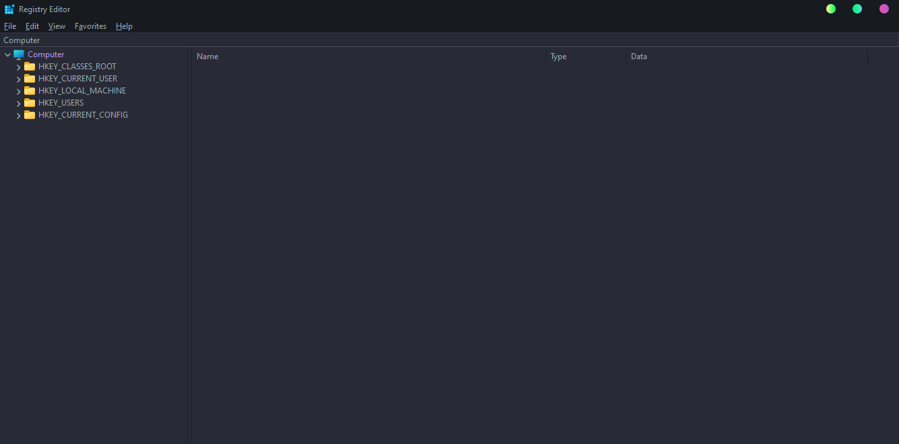
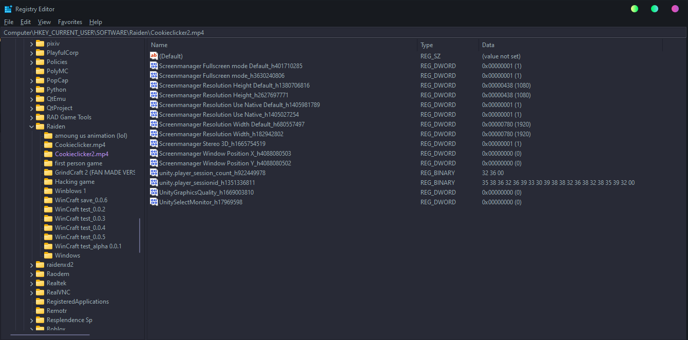
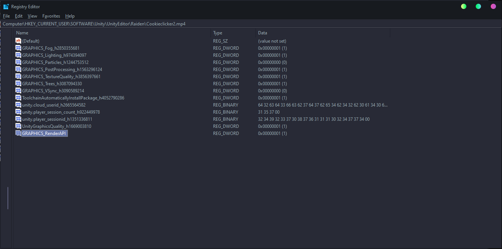

Windows
Step 1: Press Windows Key + R then type in "regedit" and press enter then click yes.
Then the Registry Editor will open.

Goto: HKEY_CURRENT_USER\SOFTWARE\Raiden\Cookieclicker2.mp4
The window will look like this:

Then find "GRAPHICS_RenderAPI" and doubleclick it.

Heres what you can set it to:
0: Vulkan
1: DirectX 11
2: OpenGL
Then open the game and your changes should apply!